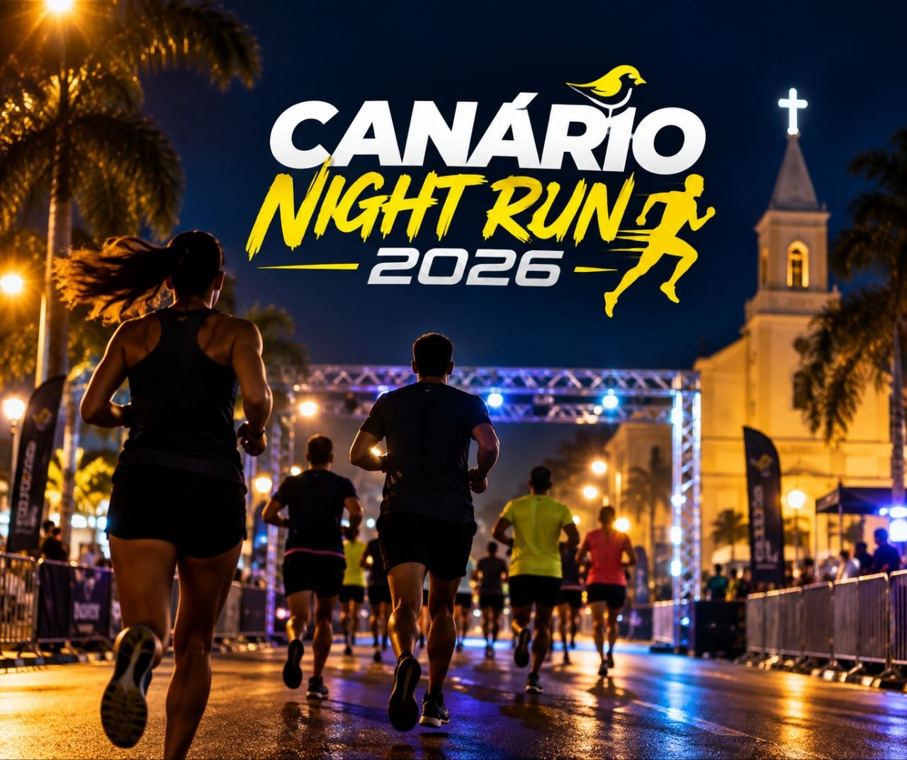

ESPORTES
Canário Night Run 2026 está marcada para dezembro em Pedro Canário
07/09/2026 às 14:11

Imagem ilustrativa gerada por IA
Pedro Canário terá mais um evento voltado aos amantes da corrida de rua. A Canário Night Run 2026 está marcada para o dia 5 de dezembro e integra o calendário de provas esportivas previstas para o Espírito Santo.
A corrida será realizada em Pedro Canário e aparece nos calendários especializados com percurso de 6 quilômetros. Por ser uma prova noturna, o evento amplia as opções para atletas e praticantes de corrida da cidade e da região.
Os interessados devem acompanhar os canais de inscrição e da organização para conferir informações atualizadas sobre horários, percurso, regulamento e participação.
Fonte: Sua Inscrição